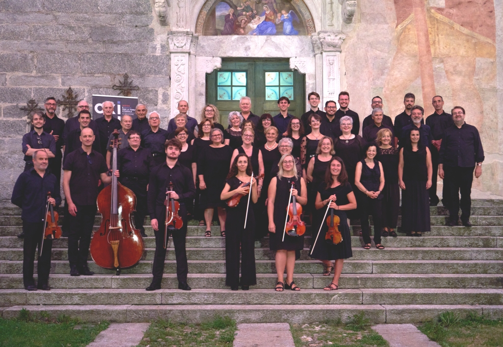

Cappella Musicale del Sacro Monte Calvario
Le formazioni vocali e strumentali del Sacro Monte Calvario di Domodossola, tra liturgia e stagione concertistica.
La Cappella Musicale del Sacro Monte Calvario
La Schola Gregoriana del S. Monte Calvario, la Corale di Calice, il Convivio Rinascimentale e la Camerata Strumentale di S. Quirico danno vita alla Cappella Musicale del Sacro Monte Calvario di Domodossola.
Deve la sua denominazione all'attività d'insieme, sia liturgica che concertistica, svolta dai diversi gruppi al Sacro Monte Calvario, coinvolgendo un ampio organico di musicisti articolato in diverse formazioni.
Il nostro repertorio abbraccia un ampio arco temporale, dal XIV secolo fino alla contemporaneità: un emozionante viaggio attraverso la storia della musica.

Le quattro formazioni
Dal canto gregoriano all'orchestra da camera, ogni formazione ha un proprio repertorio e una propria tradizione.
Corale di Calice
Il nucleo storico da cui è nata la Cappella Musicale, al servizio liturgico del Santuario del SS. Crocifisso.
Scopri di più → Ensemble vocaleIl Convivio Rinascimentale
Gruppo vocale dedito alla musica sacra e profana del Rinascimento e del Barocco.
Scopri di più → Canto gregorianoSchola Gregoriana
Custode del canto liturgico della tradizione cattolica, con studio e trascrizione di codici antichi.
Scopri di più → Orchestra da cameraCamerata Strumentale di S. Quirico
Orchestra da camera che affianca coro ed ensemble nelle grandi partiture barocche e classiche.
Scopri di più →La stagione concertistica
I concerti della Cappella Musicale: al Sacro Monte Calvario di Domodossola, nelle chiese dell'Ossola e altrove.
Canta con noi
Canta i capolavori della storia della musica, dal vivo e con l'orchestra — gratis e senza esperienza. Vieni a provare un venerdì, senza impegno: troverai un clima di amici.
Dove siamo
Cappella Musicale del S. Monte Calvario
Borgata Sacro Monte Calvario, 8 — Calice
28845 Domodossola (VB)
Telefono: 333 985 2691
Email: info@cappellasmc.it
Resta aggiornato
Iscriviti alla newsletter per ricevere in anteprima i prossimi concerti.
Canta con noi
Cerchiamo nuove voci — senza esperienza e a costo zero. Vieni a provare un venerdì, senza impegno.